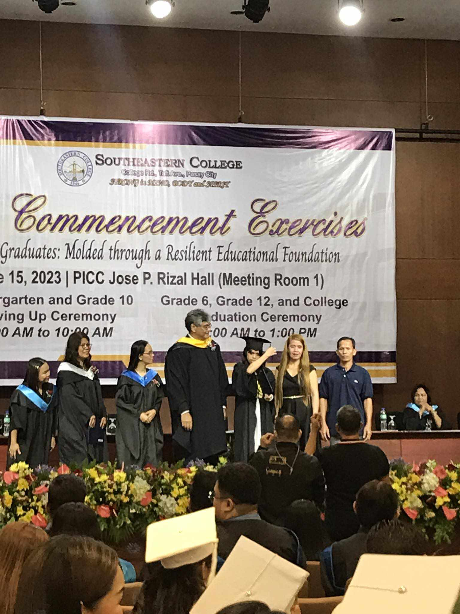
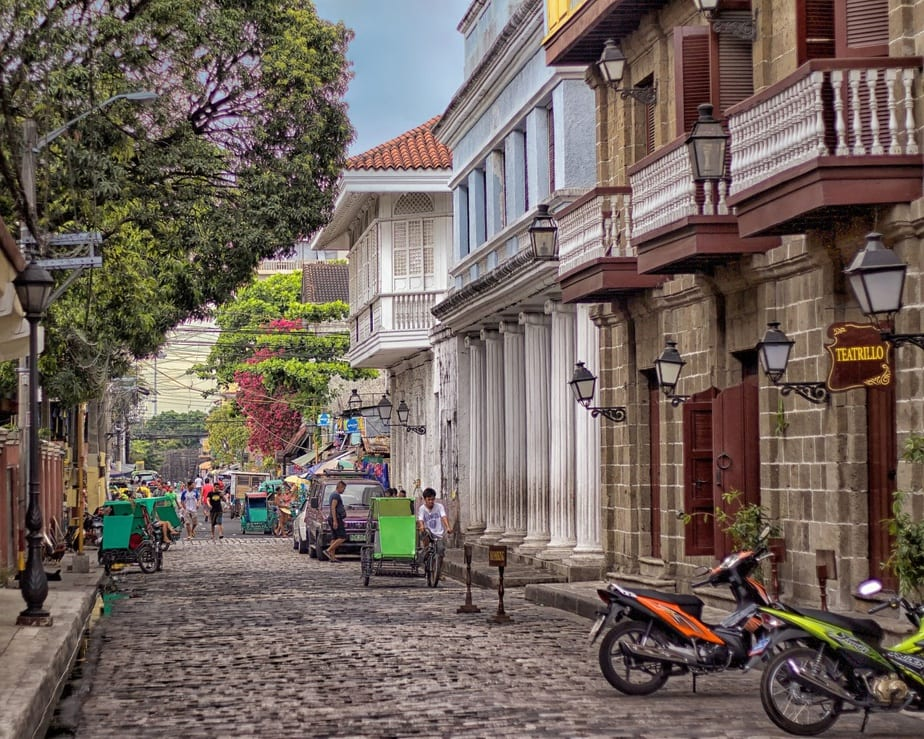
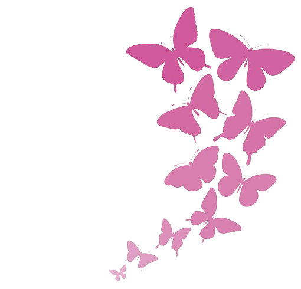

ABOUT ME
Mariel Kim R. Vaflor
I am Mariel Kim R. Vaflor, originally from Pandacan, Manila. I was born on November 29, 2004, making me 19 years old. Currently, I am a first-year student at Pamantasan ng Lungsod ng Maynila, pursuing a Bachelor of Science in Computer Science.
Technology has always fascinated me—how it works, its transformative impact on our lives, and its continuous role in advancing our world. While my initial dream was to enter the field of medicine, practical considerations led me to choose Computer Science. Despite this shift, I find solace in the fact that science remains a significant component of my chosen course.
I am excited about the upcoming journey in this field and look forward to the opportunities and challenges it will bring.
Hobbies
Apart from my academic pursuits, there are several things I love doing either to relax or just to kill time. These activities include reading books, watching movies, and playing with my cats. Engaging in these pastimes brings me joy and balance in my life, offering a refreshing break from the demands of my studies.

Loves and Likes
One of the most 'not obvious' thing about me is that I love the color pink. I appreciate
various shades, but I'm particularly drawn to pastel colors, especially pastel pink. I love cats and we have four of them.
As I've mentioned, my love for movies often leads me to choose to stay at home to relax over going
out to travel. My taste in films is diverse, spanning various genres, but I find myself most
interested in sci-fi, sitcoms, and thrillers.
In addition to my passion for Western cinema, I also enjoy indulging in the world of Korean
entertainment. I love K-dramas and K-pop. This year, one of my favorite K-dramas has been
"Twinkling Watermelon," and I believe it will remain a favorite for a long time. While my
enthusiasm for Blackpink has waned a bit compared to the past, they still hold a special place in my heart.

EDUCATION
Elementary
Jacinto Zamora Elementary School
I attended Jacinto Zamora Elementary School for three years, covering my first, second, and third grade levels. During this time, I gained valuable academic and social experiences that contributed significantly to my early education.
ExploreIntermediate
Food for Hungry Minds
I attended and graduated from Food for Hungry Mind School, completing three years spanning my fourth, fifth, and sixth grade levels. I was fortunate to receive a scholarship from the school, which greatly supported my academic endeavors financially until now. This scholarship not only eased the financial burden but also enhanced my educational experience, allowing me to focus more on my studies and personal growth.
ExploreHigh School
Southeastern College
I attended and successfully graduated from Southeastern College, completing my entire high school education over the course of six years. I was honored to be awarded a scholarship from the school, which significantly contributed to my academic journey. Graduating from Southeastern College was a pivotal moment in my life, and the scholarship served as a testament to the school's commitment to nurturing academic excellence.
ExploreCollege
Pamantasan ng Lungsod ng Maynila
Currently, I am a first-year college student pursuing a Bachelor of Science in Computer Science. I am enthusiastic about embarking on this exciting academic journey, eager to delve into the world of computer science and explore its myriad possibilities.
Explore2011-2014
Elementary
Jacinto Zamora Elementary School
2142 E Zamora St, Pandacan, Manila, Metro Manila
- Achieved Third Honor Award 2011

2014-2015
Intermediate
Food for Hungry Minds School
1924 Taft Avenue cor. Bernabe Street Pasay City
- Graduated with Honor 2016
- Earned Perfect Attendance Award
- Recognized as Quiz Bee Champion 2016
- Art Club Member

2017-2023
High School
Southeastern College
College Road, Taft Avenue, Pasay City
- Science Club member 2017
- Math Challenge Quiz Bee Finalist 2017
- Science Fair Booth Speaker 2017
- SEC-TED TALKS Speaker 2018
- Class Vice President 2018
- Drum and Lyre Club member 2018
- Family of Science Wizards' Quiz Bee Finalist 2018
- Science Fair Booth Speaker 2019
- Class Secretary 2019
- Mathematics Student Teacher 2019
- Book Warrior Club member 2019
- Science Quiz Bee Finalist 2019
- Spoken Word Poetry Contest Winner 2021
- Math Challenge Quiz Bee Finalist 2021
- Class Secretary 2022
- Science Quiz Bee Silver Icon Winner 2023
- Outstanding Performance in Science 2023
- Outstanding Performance in Social Science 2023
- Batch Rank 01 2023
- Principal's Lister with Honor 2018-2021
- Exemplary Conduct Award 2018-2021
- Perfect Attendance Award 2017-2020
- Principal's Lister with High Honor 2022 & 2023

2023-Present
College
Pamantasan ng Lungsod ng Maynila
General Luna, corner Muralla St, Intramuros, Manila
None

PORTFOLIO
Take a moment to explore my collection of materials that not only showcase my experience and skills but also offer insights into my thoughts, providing a more comprehensive view of my journey in this digital world.
Resume
WORK SHOWCASE
HTML with CSS Websites
BLOG

Gratitude
The long wait is over. We have come to this day. We can now finally scream and shout, 'Yes, we did it! ' because we have finally finished another chapter of our lives, yet our book is far from ending. Along the journey, we stumbled, fell, got wounded...
Read More

Walls of Past
On February 15, 2022, we visited the oldest district and historical center in the city of Manila, Intramuros. Before reaching Intramuros, we had to traverse the road amidst the intense glare of the sun. We walked along the length of Padre...
Read More
Women
In the past years, women have experienced severe discrimination. Some perceive women as weak compared to men, leading to unequal opportunities in education, employment, and within the household. Their human rights...
Read More
CONTACT
Let's get in touch
You can contact me using the following contact information. I hope to hear from you soon!
Obesis Street Pandacan Manila
marielkimrvaflor@gmail.com
09617885384
